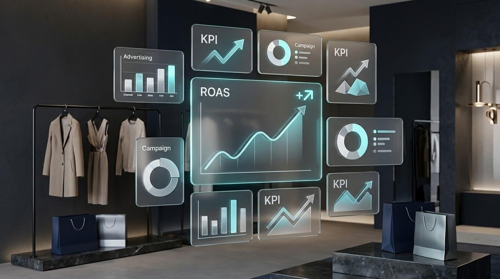
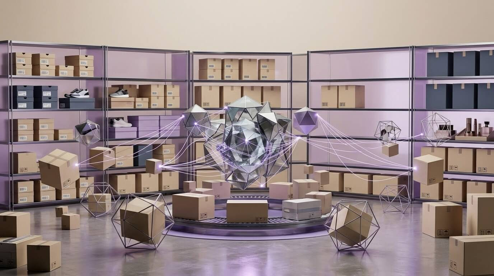
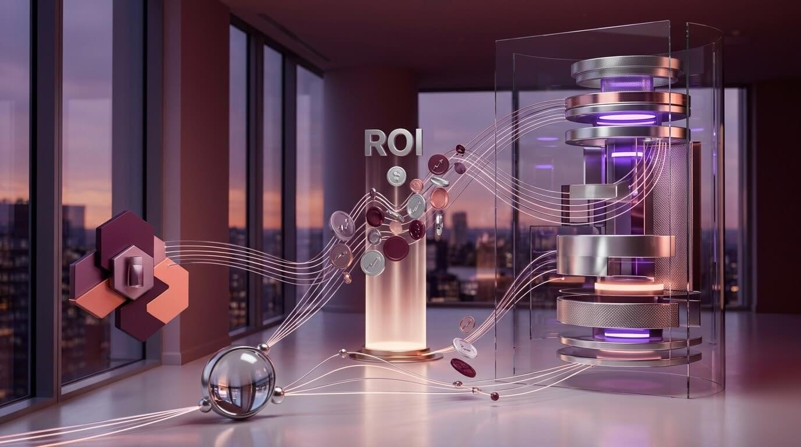

Стратегия
Как построить культуру данных за 90 дней
Пошаговый план внедрения подхода, основанного на данных.
Clario собирает продажи, рекламу и клиентов в один умный дашборд. Искусственный интеллект находит инсайты за секунды и подсказывает, что делать прямо сейчас.
Не картинка — настоящий дашборд на HTML, CSS и JavaScript. Переключайте периоды, фильтруйте, сортируйте таблицу и наводите курсор на график.
| Продукт | Выручка | Заказы | Статус |
|---|---|---|---|
| Clario Pro | ₽ 12,5 млн | 1 840 | Рост |
| Clario Start | ₽ 6,8 млн | 2 105 | Рост |
| Enterprise | ₽ 9,2 млн | 312 | Стабильно |
| Доп. аналитика | ₽ 2,4 млн | 890 | Рост |
| Старый тариф | ₽ 0,9 млн | 145 | Спад |
Большинство команд тонут в разрозненных CRM, рекламных кабинетах и таблицах Excel. Clario устраняет этот хаос: автоматически собирает данные из десятков источников и превращает их в понятные визуализации и рекомендации.
Искусственный интеллект не просто показывает цифры — он объясняет, почему метрики изменились, какие факторы повлияли на результат и какие действия стоит предпринять. Это как команда аналитиков, которая работает круглосуточно.
Платформа создана для руководителей, маркетологов и менеджеров по продажам, которым нужны быстрые ответы без изучения сложных BI-систем.
Готовые коннекторы работают сразу после авторизации. Синхронизация идёт автоматически.
AmoCRM, Bitrix24, Salesforce, retailCRM, 1С. Полная картина пути клиента — от первого касания до повторной покупки.
Яндекс.Директ, VK Ads, Google Ads, myTarget. Расходы, конверсии и ROAS в одном отчёте. AI находит слабые кампании.
Mindbox, Carrot quest, Intercom. Сегментация, RFM-анализ, прогноз оттока.
Яндекс.Метрика, Google Analytics 4, Roistat. Поведение на сайте и связь с реальными продажами.
Google Sheets, Excel, PostgreSQL, ClickHouse. Исторические данные и прямое подключение хранилищ.
1С, МойСклад, SAP. Остатки, логистика и себестоимость рядом с маркетинговыми метриками.
Выберите нужные сервисы из каталога и авторизуйтесь. Данные начнут поступать в защищённое хранилище в течение нескольких минут.
Движок распознаёт клиентов, заказы и кампании, строит связи и создаёт единую модель. Ручные настройки не нужны.
Выберите готовый шаблон или соберите свой экран из виджетов. У каждого сотрудника может быть персональный дашборд.
Каждый день Clario анализирует изменения и отправляет краткие выводы: что выросло, почему и что делать.
Отчёты, которые раньше готовили днями, теперь доступны в один клик.
От первого клика по рекламе до повторной покупки. Видно, где теряются деньги.
Прогноз спроса, риск оттока, оптимальный бюджет. Действуйте на опережение.
Маркетинг, продажи и финансы смотрят одни и те же цифры.
Шифрование, роли, аудит, соответствие 152-ФЗ.

Прогноз оттока помог удержать 15% клиентов из зоны риска.

Прогноз спроса по товарам улучшил оборачиваемость.
Сборка отчётов для инвесторов сократилась с 4 дней до 4 часов.
14 дней бесплатного доступа. Банковская карта не требуется.
Раньше на подготовку еженедельного отчёта уходило полдня. Теперь я открываю Clario и за пять минут вижу всё необходимое. AI даже подсказывает, на какие метрики обратить внимание.
Мы подключили AmoCRM, Яндекс.Директ и Метрику за один день. Первый инсайт от AI окупил подписку уже в первую неделю.
Clario стала единым источником правды для маркетинга и продаж. Прогнозы спроса помогли сократить излишки почти на четверть.
Пошаговый план внедрения подхода, основанного на данных.
Какие данные нужны для точных прогнозов спроса и оттока.

Формулы, атрибуция и почему средний показатель бесполезен без контекста.
Оставьте заявку — мы проведём демонстрацию, подскажем подходящий тариф и ответим на вопросы. Обычно отвечаем в течение двух часов.